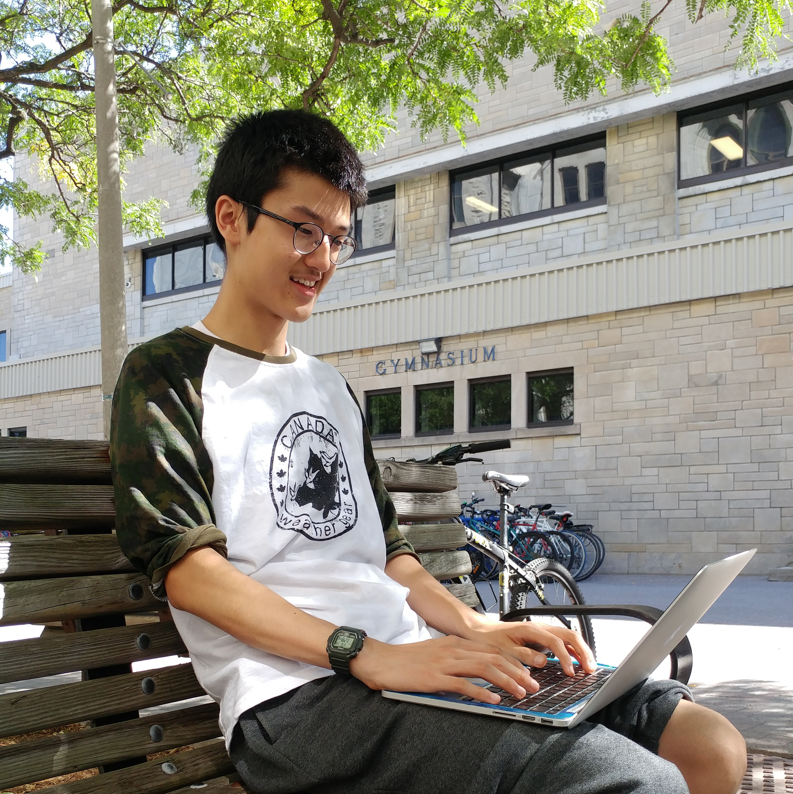
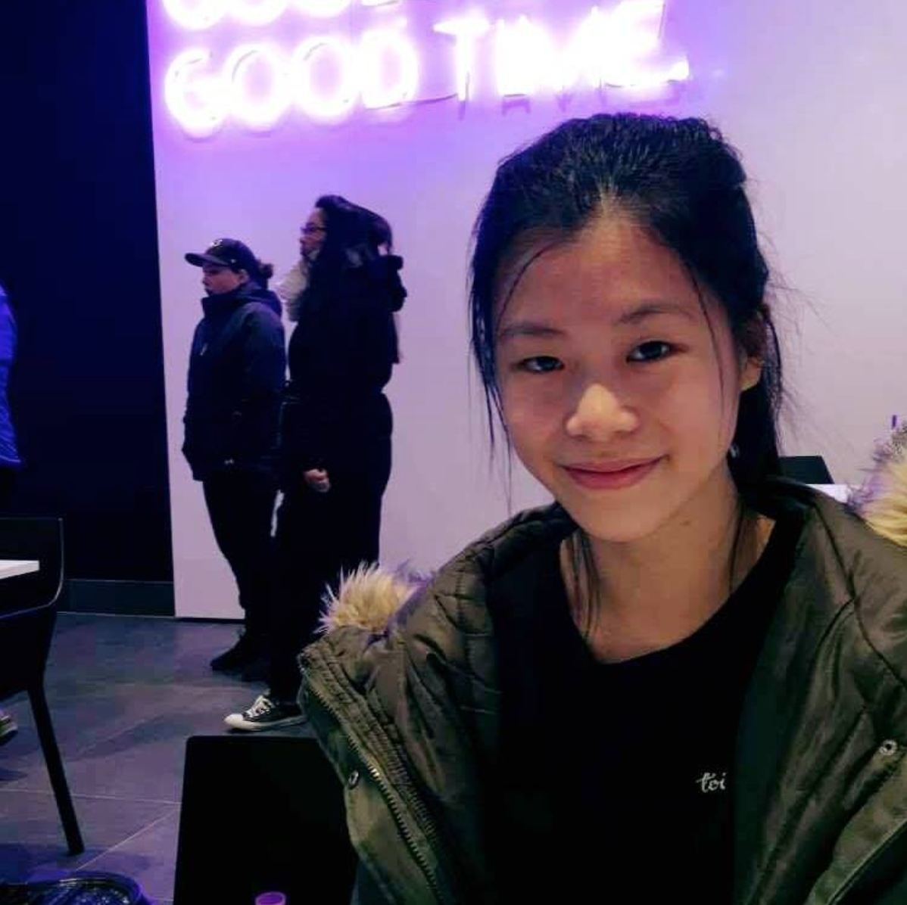

For my summative, I am analyzing many statistics from the 2018 Masters Tournament and observing how they impact a player’s results.
The Masters is a golfing event that takes place in early April each year, where only the best golfers are invited to compete for the title. In 2018,
87 players participated in the tournament. Some players were only able to play two rounds of golf before being cut due to poor scores, but a majority
of players played four rounds, from Thursday to Sunday of the week. The winner of the tournament was Patrick Reed of the United States, posting a
15-under score of 273 over the four rounds. After Reed was Rickie Fowler at 14 under and Jordan Spieth at 13 under. In this assignment,
I am going to take data from all the players who made the cut. I will analyze their performance in the four most important stats in golf and compare
them to their scores in the third and fourth round. The four main statistics that I use are Average Driving Distance, Driving Accuracy, Greens
In Regulation, and Number of Putts.

Why is Manchester City F.C. so dominant in the Premier League
Work of Edward Li | January 24th, 2018
My topic is on the current soccer 2017-18 Premier League leaders, Manchester City (or just City for short),
and how they have successfully played their way to a 12-point lead as of Jan 15, 2018 and after 23 games played. Most pundits also
agree that they have dominated almost every game they’ve played in. In this report, I hope to analyse why and how they have created
such a large gap points-wise, how they dominate every match so well, and how their stats might explain their success. My thesis, in
essence, is: Manchester City is the best team in the PL, and trends in their stats can explain why they are doing so well.
Statistically, they will be the club to win the Premier League title. I expect my thesis to be true because City are top of the
league and also have many impressive statistics that continue to get better with each game. I also will try to explain why maybe
other teams aren’t doing so well based off of their statistics.

Factors Affecting Canadian and American Rio Olympic Swimmers
Work of Claire Liu | June 20th, 2018
Every four years, top athletes from all around the world earn their chance to represent their country by competing
in summer sports at the Olympics. The 2016 Olympics in Rio De Janeiro hosted 28 different sports, ranging from gymnastics to track to basketball
to diving. Arguably one of the most celebrated sports for Canadians during Rio 2016 was swimming, where Canada won 6 medals in the aquatic sport.
Viewers across the country watched in exhilaration as Canada’s swimmers soared to unexpected heights during the Games. From the Olympic coaches’
perspective, the Rio 2016 Olympics also served as a crucial point for them to take notes of the factors that have lead to the team’s success.